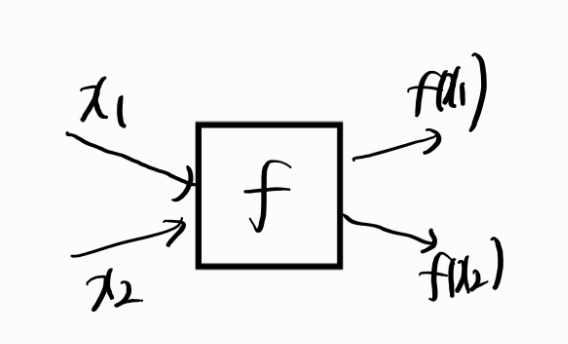
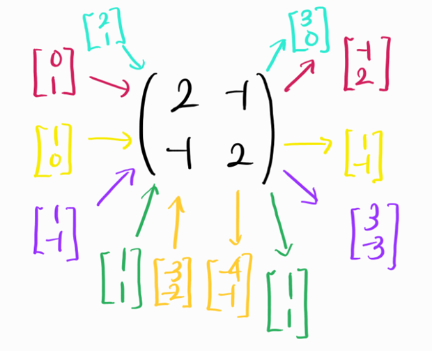
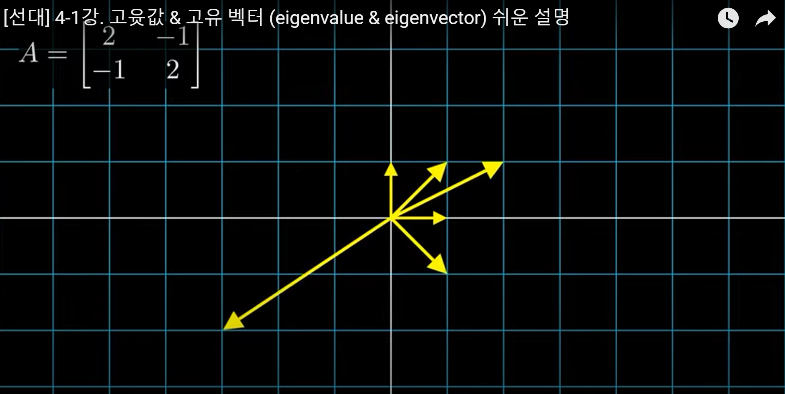

유튜브 - 혁펜하임님의 선형대수학 강의 정리용 입니다.
행렬은 선형변환이다.
- 함수는 어떤 입력을 주면 출력을 내뱉는다.

- 행렬도 마찬가지로 함수로 바라볼 수 있다. 다시말해 행렬\(A\)에 어떤 입력 \(v\)(벡터)를 넣어주면 출력 \(Av\)를 내뱉는다고 볼 수 있다.

- 행렬은 함수중에서도 선형변환(linear transformation,linear mapping)이다.
- 다음과 같은 선형변환의 두 조건을 만족하기 때문이다.
- 만족하는지 확인해보자.
Eigen value,Eigen vector?
- eigen value(고윳값),eigen vector(고유벡터)는 아래를 만족한다.
- 위와 같은 방정식에서 \(\lambda\)를 행렬A의 eigenvalue , \(v\)를 이에 대응하는 eigenvector라고 한다.
- 어떤의미?
- 일반적으로 \(v\)가 선형변환 \(A\)를 통과하면 방향,크기가 어떻게 바뀔지 알 수 없다.
- 그러나 어떤 벡터들은 \(A\)를 통과해도 크기는 모르지만 단순히 스칼라배되기에 방향은 변하지 않는다.(여기서 방향은 기존에 벡터가 올라가있던 직선에서 벗어나는 것을 의미한다.)
- 이때의 방향은 안변하는 벡터들이 eigen vector이며 크기는 eigen value에 의하여 scailing된다.
Example

- 그림과 같은 선형변환을 생각해보자.
- 대부분의 경우 선형변환된 다음 그 방향,크기는 제멋대로 변한다.
- 그러나 보라색벡터와 초록색벡터는 각각 3,1만큼 크기만 늘어나며 방향이 바뀌지 않는 단순한 스칼라배임을 알 수 있다.
- 따라서 보라색벡터 \([-1,1]^T\),초록색벡터 \([1,1]^T\)는 \(A\)의 eigenvector이며 대응하는 eigenvalue는 각각 3,1임을 알 수 있다.
- 위에서는 초록색 보라색만 찾았지만 사실 이 경우 eigenvector는 무한히 많다.
- 또다른 어떤 선형변환의 경우에는 아예 존재하지 않는 경우도 있다.
- 그림으로 보면 아래와 같다.(사실 영상으로 보는게 훨씬 이해가 잘된다. 혁펜하임님 유튜브 가서 한번 보길 추천해요)


Invertible
- 선형변환(함수) 관점에서 invertible하다는 서로다른 입력이 들어갔을때 서로다른 출력이 나온다이다.
- 위의 그림에서 선형변환 \(A\)는 서로다른 입력에 대해서 서로다른 출력을 내뱉는다.
- 따라서 서로다른 출력에 대해 역으로 서로다른 입력을 하나씩 매핑하는 역함수를 생각할 수 있으며 따라서 \(A\)는 invertible하다.

- 위의 그림에서는 선형변환 \(A\)는 각각의 서로다른 입력에 대하여 동일한 출력을 내뱉는다.
- 그러면 출력값에 대해서 하나씩 매핑하는 역함수를 생각하기가 어렵다.
- 예를 들어 \(Av_1\)이 \(v_1\)과 \(v_2\)중에서 어디로 mapping되어야 할지 생각할 수 없다.
- \(v_1,v_2\) 모두 \(Av_1\)에 mapping되기 때문이다.
- 즉 서로다른 input에 대해 동일한 output을 출력하는 경우 선형변환 \(A\)는 invertible하지 않다.
eigenvector,eigenvalue 구하기
- 정의를 다시 가져와보면 ….
- 먼저 eigen vector를 구해보자.
- \(v \not = {\bf{0}}\)라는 조건을 활용해볼 수 있을 것 같다.
- 아래와 같이 식을 변형해보자.
- \(\lambda\)는 상수이므로 \(v\)로 묶고 행렬과의 뺄셈을 수행하기 위해서 \(I\)(항등행렬)를 곱해줬다.
- \(v\)는 \(v\not = \bf{{\bf{0}}}\)의 조건을 만족해야 한다.
- 만약 \(\text{det}(A-\lambda I) \not = {\bf{0}}\)이라면 \(A-\lambda I\)의 역행렬이 존재하므로 \(v = (A-\lambda)I{\bf{0}} = {\bf{0}}\)이 되어 전제된 조건을 만족하지 못하게 된다.
- 따라서 \(\text{det}(A-\lambda I) = {\bf{0}}\)라는 조건을 끌어낼 수 있다. \(\rightarrow \lambda\)를 구하는 식이 된다.
- 또한 윗식에 의해서 \(v\)는 \((A-\lambda I)\)의 null space임을 알 수 있다. \(\rightarrow v\)를 구할 수 있다.
- 즉, eigen value,eigen vector는 아래와 같이 구하면 된다.
Q. 그런데 \(N(A-\lambda I)\)의 원소는 무수히 많은데 그걸 다 고유벡터라고 해야해?
A. 정의상 모두 고유벡터가 맞다. 하지만 일반적으로 null space의 기저만을 대표로 하여 고유벡터로 삼는다.
- 특히 기저의 길이가 1이되게 정규화해서 고유벡터로 삼는다.
- 위와 같은 null space를 eigen space라고도 한다.
정리
- 행렬은 선형변환이다.
- 일반적으로 선형변환에 의해 벡터들의 크기와 방향은 모두 변한다.
- 그런데 그 중에서 크기만 변하는 벡터들이 있다.
- 이러한 벡터들을 선형변환에 대응하는 고윳값,고유벡터라 한다.